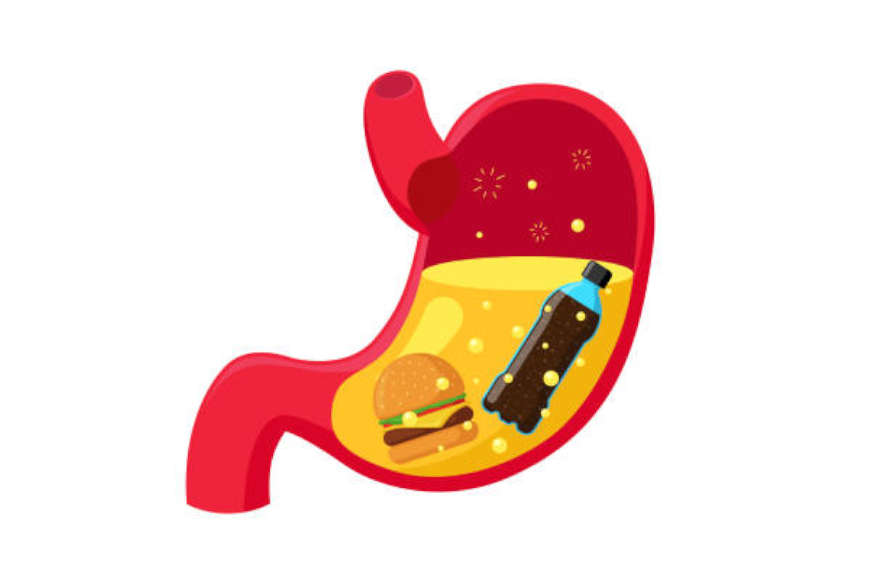

Welcome! Here you will learn the functions of each system!
Click here to return to the Main Menu
Respiratory System
Your respiratory system is made up of your lungs, airways (trachea, bronchi and bronchioles),
diaphragm, voice box, throat, nose and mouth. Its main function is to breathe in oxygen and
breathe out carbon dioxide while protecting you from harmful particles.
These organs work together as your body's breathing network by bringing oxygen in when you inhale
and removing carbon dioxide when you exhale. You also have muscles and blood vessels that
support your respiratory system.
Main Functions
Scent Recognition: Moves air molecules past your olfactory nerve, which sends
smell messages to your brain
Vocal Sound Production: Allows you to talk by vibrating air through your vocal
cords to create sounds
Cellular Respiration: Pulls in oxygen for your body's cells and removes carbon
dioxide waste through the small air sacs (alveoli) in your lungs
Temperature & Humidity Control: Warms air to match your body temperature and
adds moisture to bring it to the humidity level your body needs
Protection & Filtration: Blocks harmful germs and irritants from getting in, or
pushes them out if they do manage to enter
Blood pH Balance: Helps maintain proper blood pH by controlling carbon dioxide
levels, which prevents your blood from becoming too acidic
Key Organs & Parts
Nose & Mouth
Entry points for air. Your nose filters, warms, and adds moisture to incoming air.
Trachea (Windpipe)
The main airway tube that carries air from your throat to your lungs.
Bronchi & Bronchioles
Branching tubes that carry air deeper into your lungs, like branches of a tree.
Lungs
Two spongy organs that contain millions of tiny air sacs called alveoli.
Alveoli
Tiny air sacs where oxygen enters your blood and carbon dioxide is removed.
Diaphragm
The main breathing muscle that helps your lungs expand and contract.
How Breathing Works
1. Inhalation (Breathing In)
Your diaphragm contracts and moves downward while your rib muscles expand your chest
cavity. This creates more space, causing your lungs to expand and draw fresh air
containing oxygen into your body.
2. Gas Exchange
In tiny air sacs called alveoli, oxygen from the air passes through thin walls into your
bloodstream. At the same time, carbon dioxide (waste gas) moves from your blood into the
alveoli to be removed from your body.
3. Exhalation (Breathing Out)
Your diaphragm relaxes and moves upward while your rib muscles relax, making your chest
cavity smaller. This pushes the carbon dioxide-filled air out of your lungs and through
your nose or mouth.
Respiratory Mini-Game
Exchange Red CO2 Circles (Carbon Dioxide) for blue O2 Circles
(Oxygen)! Click "EXCHANGE" only when the CO2 is in the green zone and score as high as you can
without missing!
Successful Exchange: 0
Muscular System
The muscular system is composed of over 600 muscles that work together to create movement,
maintain posture, and generate heat for the body.
Your muscles contain different types of fibers: slow-twitch fibers that are great for
endurance activities like marathon running, and fast-twitch fibers that provide explosive
power for activities like sprinting and weightlifting.
Beyond movement, muscles work with bones to enable every action, making every step, jump, and
gesture possible through coordinated contractions and relaxations.
Main Functions
Movement: Contracts and relaxes to create motion at joints throughout the body
Posture Support: Maintains body position and prevents collapse against gravity
Heat Generation: Produces warmth through muscle contractions to regulate body
temperature
Joint Stability: Provides support and protection to joints during movement
Circulation Assistance: Helps pump blood back to the heart, especially in the
legs
Organ Protection: Abdominal muscles protect internal organs from injury
Major Muscle Groups
Chest (Pectorals)
Large muscles that control pushing movements and arm adduction. Essential for activities like
push-ups and throwing.
Back (Latissimus Dorsi)
Broad muscles that control pulling movements and help maintain posture. Important for rowing
and climbing motions.
Shoulders (Deltoids)
Three-part muscles that allow arm lifting in all directions. Critical for overhead movements
and arm rotation.
Arms (Biceps & Triceps)
Opposing muscles that bend and straighten the elbow. Biceps pull, triceps push - they work as
antagonistic pairs.
Core (Abdominals)
Central muscles that stabilize the spine and transfer power between upper and lower body
during movement.
Legs (Quadriceps & Hamstrings)
Powerful muscles that control knee movement. Quadriceps straighten the leg, hamstrings bend
it.
How Muscles Contract
1. Concentric Contraction
Your muscle fibers shorten and pull together as actin and myosin filaments slide past
each other. This creates the force needed to lift weights, climb stairs, or perform any
movement where muscles work against resistance.
2. Eccentric Contraction
Your muscles lengthen while still under tension, providing controlled resistance. This
happens when you slowly lower a weight, walk downstairs, or control your body's movement
against gravity.
3. Isometric Contraction
Your muscles generate force and tension without changing length or creating visible
movement. This occurs during planks, wall sits, or when you hold a heavy object in place
without moving it.
Muscular Quiz Mini-Game
A multi-choice question quiz mini-game that tests your knowledge
about muscles, muscle groups, and various functions. With 5 random questions to choose from, will
you get them all correct?
Question 1
1 / 5
Loading question...
Quiz Complete!
Your Score: 0 / 5
Digestive System
The digestive system is a complex network of organs that work together to break down food,
absorb nutrients, and eliminate waste from your body.
Your digestive tract is about 8-10 meters long, stretching from your mouth to your anus, and
includes specialized organs like the liver and pancreas that produce essential digestive
enzymes and bile.
Main Functions
Food Breakdown: Mechanically and chemically breaks down food into smaller,
absorbable nutrients
Nutrient Absorption: Absorbs vitamins, minerals, carbohydrates, proteins, and
fats into the bloodstream
Waste Elimination: Removes indigestible materials and toxins from the body
through bowel movements
Fluid Balance: Regulates water absorption and maintains proper hydration levels
Immune Protection: Acts as a barrier against harmful bacteria and pathogens
entering the body
Hormone Production: Produces digestive hormones that regulate appetite,
digestion, and metabolism
Major Digestive Organs
Mouth & Teeth
Begins mechanical digestion by chewing food and chemical digestion through saliva enzymes
that start breaking down starches.
Stomach
Produces powerful gastric acid and pepsin enzymes to break down proteins while churning food
into a liquid called chyme.
Small Intestine
Primary site of nutrient absorption, where most vitamins, minerals, carbohydrates, proteins,
and fats enter the bloodstream.
Large Intestine
Absorbs remaining water and electrolytes from indigestible food matter, forming solid waste
for elimination.
Liver
Produces bile to break down fats, processes absorbed nutrients, and detoxifies harmful
substances from the blood.
Pancreas
Secretes digestive enzymes for proteins, fats, and carbohydrates, plus insulin to regulate
blood sugar levels.
How Digestion Works
Ingestion & Chewing
Food enters the mouth where teeth mechanically break it down while saliva begins chemical
digestion of starches.

Stomach Acid Breakdown
The stomach produces hydrochloric acid and pepsin enzymes that break down proteins and
kill harmful bacteria.
Small Intestine Absorption
Pancreatic enzymes and bile complete digestion while nutrients are absorbed through
intestinal walls into the bloodstream.
Large Intestine & Elimination
Water is absorbed from remaining waste, forming solid stool that is stored in the rectum
and eliminated through the anus.
Circulatory System
The circulatory system is a complex network of the heart, blood vessels, and blood that
transports oxygen, nutrients, and waste products throughout your entire body.
Your heart beats approximately 100,000 times per day, pumping roughly 7,200 litres of blood
through over 19,000 km of blood vessels to keep every cell in your body alive and
functioning.
Main Functions
Oxygen Transport: Carries oxygen from the lungs to all body tissues and returns
carbon dioxide to the lungs for elimination
Nutrient Delivery: Transports nutrients absorbed from the digestive system to
cells throughout the body
Waste Removal: Collects metabolic waste products and delivers them to organs
like kidneys and liver for elimination
Temperature Regulation: Distributes heat throughout the body and helps maintain
optimal body temperature
Immune Defense: Transports white blood cells and antibodies to fight infections
and diseases
Hormone Distribution: Carries hormones from endocrine glands to target organs
throughout the body
Major Circulatory Components
Heart
Four-chambered muscular pump that contracts rhythmically to push blood through the
circulatory system, with separate circuits for lungs and body.
Arteries
Thick-walled blood vessels that carry oxygen-rich blood away from the heart to tissues
throughout the body under high pressure.
Veins
Thin-walled blood vessels with valves that return oxygen-poor blood back to the heart, often
working against gravity.
Capillaries
Microscopic blood vessels where actual exchange of oxygen, nutrients, and waste occurs
between blood and body tissues.
Blood
Liquid tissue containing red blood cells for oxygen transport, white blood cells for
immunity, platelets for clotting, and plasma for transport.
Lungs
Respiratory organs where blood picks up fresh oxygen and releases carbon dioxide through the
pulmonary circulation circuit.
How Blood Circulation Works
Heart Pumping Action
The heart's four chambers work in sequence: right side pumps blood to lungs, left side
pumps oxygenated blood to the body.
Pulmonary Circulation
Oxygen-poor blood travels from the right heart to the lungs where it picks up oxygen and
releases carbon dioxide.
Systemic Circulation
Oxygen-rich blood flows from the left heart through arteries to capillaries where
nutrients and oxygen are delivered to cells.
Venous Return
Oxygen-poor blood returns through veins back to the heart, completing the circulation
cycle that repeats continuously.
Nervous System
Your nervous system is your body's control center, made up of your brain, spinal cord, and a vast
network of nerves that reach every part of your body. It processes information from your senses,
controls your movements, and manages both conscious actions and automatic functions like
breathing and heartbeat.
This complex system works like a high-speed communication network, sending electrical signals
throughout your body in milliseconds. It coordinates everything from simple reflexes to complex
thoughts, emotions, and memories.
Main Functions
Sensory Processing: Receives and interprets information from your five senses (sight,
hearing, touch, taste, smell) to help you understand your environment
Motor Control: Controls voluntary movements like walking, writing, and speaking, as well
as involuntary actions like reflexes